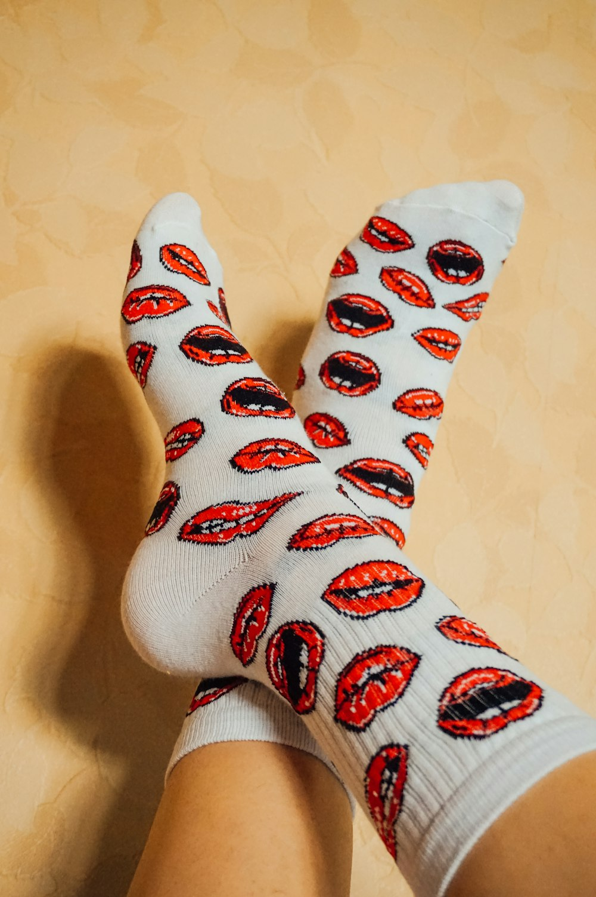

Blister Mechanics & Shear Friction
Biomechanical analysis of epidermal shear stress, stratum corneum softening, and friction coefficient reduction in running socks.

Dual-Layer Moisture Evaporation Kinetics
Thermodynamic investigation into push-pull capillary action pairing hydrophobic polypropylene with hydrophilic merino wool fibers.

Graduated Compression & Venous Return
Clinical evaluations of 15-20 mmHg degressive pressure gradients, calf muscle oscillation damping, and lactate clearance.
200-Needle Circular Knitting Precision
Engineering comparison of 200N versus 144N high-gauge stitch density, snag resistance, and anatomical foot contouring.

Plantar Fascia Dynamic Arch Bracing
Anatomical study of dynamic circular elastane bands and their role in stabilizing the longitudinal foot arch under repetitive ground shock.

Seamless Toe Linking & Rosso Mechanics
The evolution of toe seam closures from bulky industrial chainstitches to zero-ridge Rosso hand-linked comfort.